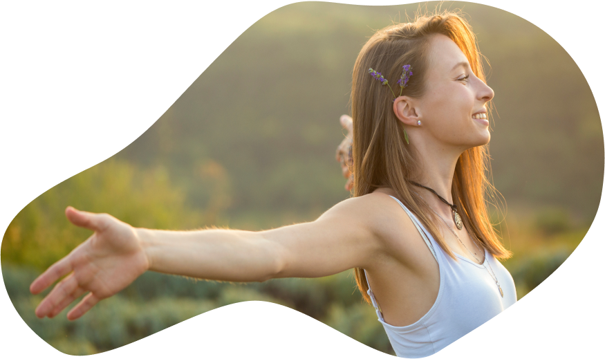

AZ
Qadın
təhsil mühiti
- Bizim məqsədimizdir

Bizim haqqımızda

The mission of WDF PU is to help to increase the role of women in social life. In order to
achieve the objectives of the Association shall perform the following duties among the women in
cultural, scientific and to help business relations. To help to improve women’s knowledge and
skills. To contribute to the promotion of gender equality and human rights. To carry out the
duties provided for in this Charter for the Community and civil society in development, health
and ecological issues. Various courses and seminars round tables and meetings exhibitions,
conferences, charity marathons, and other cultural events. Also humanitarian help to the HIV
infected people, disabled and youth.Information about the defined goals and activities of the
Public Union is carried out in accordance with the legislation. Adapting the adverse impact of
Climate Change and also in reducing the risk factors of disasters so that they can sustain their
livelihood and better life for the future.
Layihənin təsisçisi
The mission of WDF PU is to help to increase the role of women in social life. In order to
achieve the objectives of the Association shall perform the following duties among the women in
cultural, scientific and to help business relations. To help to improve women’s knowledge and
skills. To contribute to the promotion of gender equality and human rights. To carry out the
duties provided for in this Charter for the Community and civil society in development, health
and ecological issues. Various courses and seminars round tables and meetings exhibitions,
conferences, charity marathons, and other cultural events. Also humanitarian help to the HIV
infected people, disabled and youth.Information about the defined goals and activities of the
Public Union is carried out in accordance with the legislation. Adapting the adverse impact of
Climate Change and also in reducing the risk factors of disasters so that they can sustain their
livelihood and better life for the future.